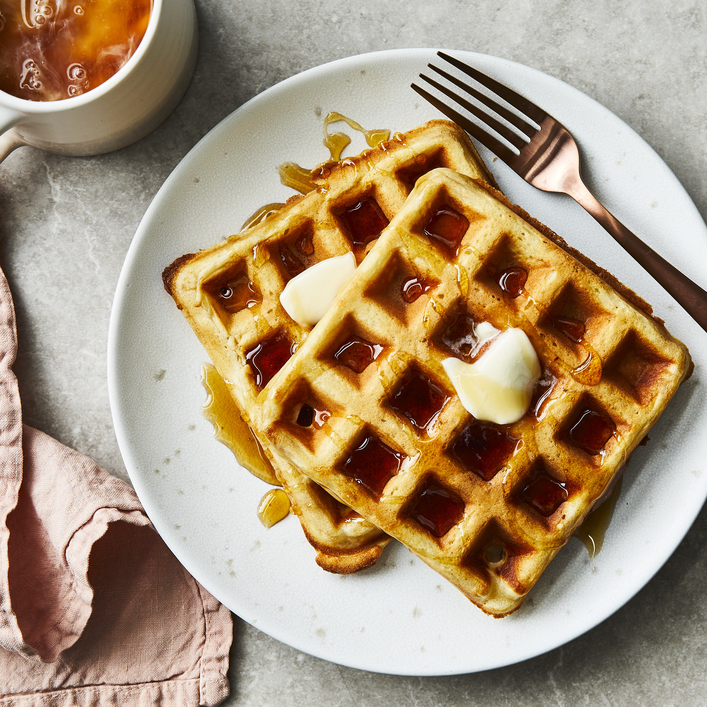

Classic Waffles

Description
Delicious waffle recipe that will allow you to enjoy a restaurant like meal in the comfort of your home. Enjoy lovely and crispy waffles with this recipe that will absolutely make your mornings better.
Fluffy and delicious is what this waffles are, with some maple syrup or your toppings of choice you will enjoy with your family.
Ingredients
- 2 cups all-purpose flour
- 1 teaspoon salt
- 4 teaspoons baking powder
- 2 tablespoons white sugar
- 2 eggs
- 1 1/2 cups warm milk
- 1/3 cup butter, melted
- 1 teaspoon vanilla extract
Steps
- In a large bowl, mix together flour, salt, baking powder and sugar; set aside. Preheat waffle iron to desired temperature.
- In a separate bowl, beat the eggs. Stir in the milk, butter and vanilla. Pour the milk mixture into the flour mixture; beat until blended.
- Ladle the batter into a preheated waffle iron. Cook the waffles until golden and crisp. Serve immediately.